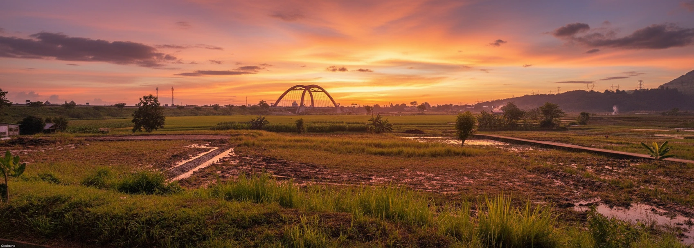
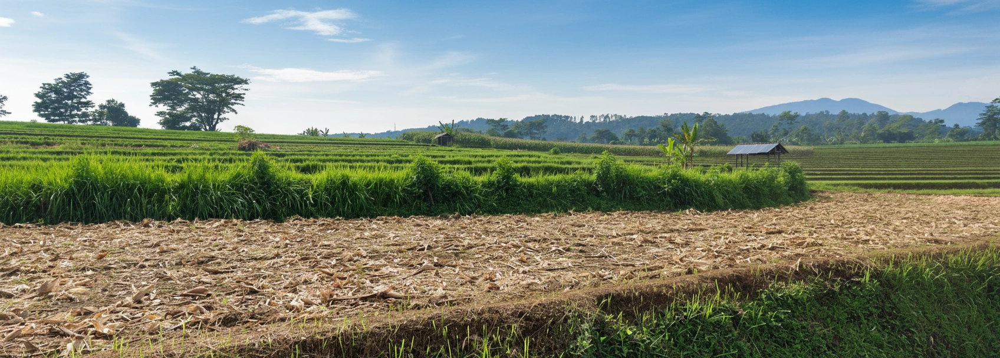
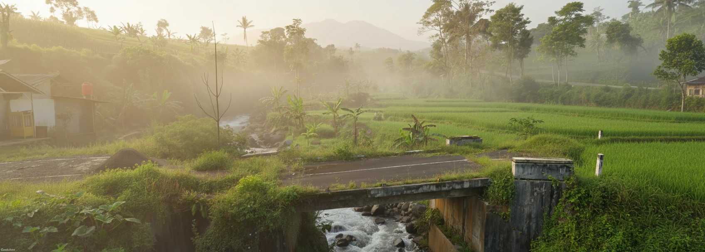
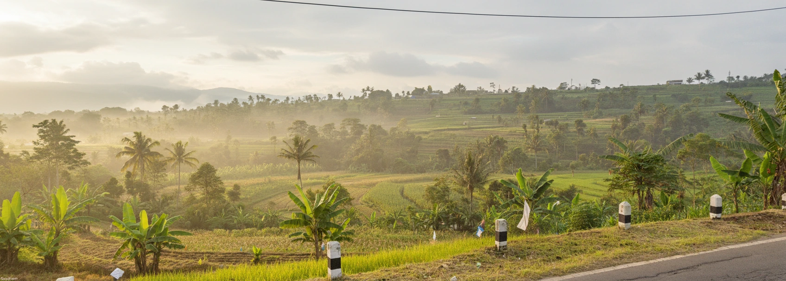
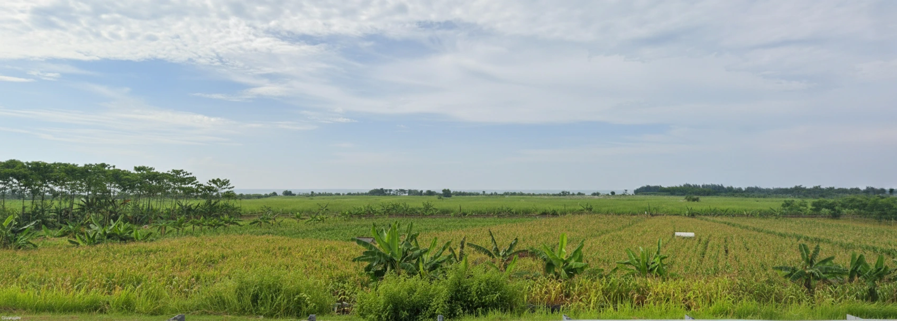
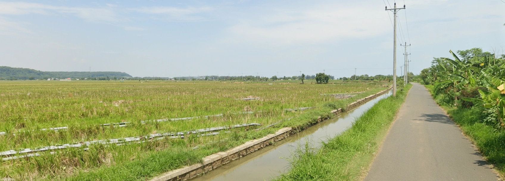

Pemetaan Cerdas untuk Ketahanan Pangan Masa Depan
Sistem Informasi Geografis (WebGIS) ini dikembangkan untuk memetakan dan mengelola data spasial pertanian di wilayah Sumbawa secara efisien. Pantau irigasi, komoditas, dan luas lahan dalam satu platform terpadu.
Fitur Andalan
Semua yang Anda butuhkan
Platform saya menawarkan berbagai fitur penting untuk menunjang kegiatan monitoring lahan agrikultur secara modern.
-
Pemetaan Lahan Sawah
Lihat batas area lahan sawah aktif, lahan tidur, serta klasifikasi penggunaannya secara detail.
-
Jaringan Irigasi
Visualisasi saluran irigasi primer, sekunder, dan tersier untuk menjamin pasokan air yang merata ke seluruh petak.
-
Produktivitas Panen
Data dummy yang mensimulasikan estimasi hasil panen per wilayah, mempermudah proyeksi ketahanan pangan.
-
Sebaran Komoditas
Distribusi letak varietas padi, jagung, palawija, dan tanaman hortikultura lainnya dalam bentuk poligon warna-warni.
Ringkasan Tata Guna Lahan
Estimasi luas penggunaan lahan agrikultur berdasarkan data dummy semester I tahun 2026.
| Kategori Lahan | Luas Perkiraan (Ha) | Status Produksi |
|---|---|---|
| Sawah Irigasi Teknis | 12,500 | Sangat Aktif |
| Sawah Tadah Hujan | 8,200 | Aktif |
| Tegal / Kebun | 5,400 | Musiman |
| Lahan Tidur | 1,100 | Tidak Aktif |